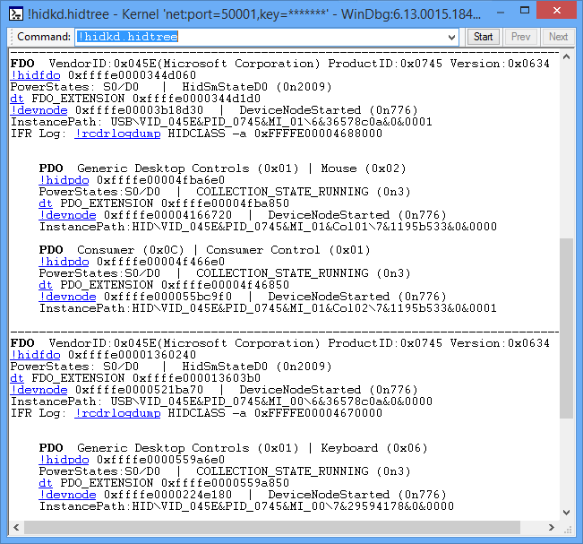

The !hidkd.hidtree command displays a list of all device nodes that have a HID function driver along with their child nodes. The child nodes have a physical device object (PDO) that was created by the parent node's HID function driver.
!hidkd.hidtree
This screen shot shows an example of the output of the !hidtree command.

O
In this example, there are two device nodes that have a HID function driver. A functional device object (FDO) represents the HID driver in those two nodes. The first FDO node has two child nodes, and the second FDO node has one child node. In the debugger output, the child nodes have the PDO heading.
When you are debugging a HID issue, the !hidtree is a good place to start, because the command displays several addresses that you can pass to other HID debugger commands. The output uses Debugger Markup Language (DML) to provide links. The links execute commands that give detailed information related to an individual device node. For example, you could get information about an FDO by clicking one of the !hidfdo links. As an alternative to clicking a link, you can enter a command. For example, to see detailed information about the first node in the preceding output, you could enter the command !devnode 0xffffe00003b18d30.
DLL
Hidkd.dll
See also